イズミヤ 夜営業 運営マニュアル
第2版（試験営業版）／2026年8月6日作成／合同会社From Scratch
― 一人運用を前提とした手順書 ―
0このマニュアルについて
イズミヤ夜営業を、自分が一人で滞りなく回すための手順書。試験営業のあいだに実測値を書き足しながら育てる前提でつくってある。
使い方の3原則
- 【 】は未確定。試験営業のなかで実測して埋める
- ▲ 印は「決めないと運用が止まる論点」。優先して潰す
- 手順を変えたら、その日のうちに書き込む
このマニュアルが本当に守りたいもの
1営業の基本情報
| 場所 | イズミヤ（南木曽駅前）※カフェ間借り |
|---|---|
| 営業日 | 毎週 水曜・木曜 |
| 営業時間 | 【 ： 】〜【 ： 】（L.O.【 ： 】） |
| 席数 | 【 】席／【 】卓 |
| 運営体制 | 1名（福田） |
| ターゲット | 中山道ハイク後の欧米豪ファミリー・カップル |
| コンセプト | クラフトビールを主役に、待ち時間が楽しい食事を置く |
| 注文・決済 | 卓上QR（Square）で客が完結。現金は原則受けない |
| 厨房の制約 | 換気が弱い。揚げ物・強い煙の出る調理はしない（蓋焼き／オーブン／卓上ホットプレートのみ） |
▲営業時間・L.O.・席数を確定して記入する
▲現金を受けるかどうか。受けるなら釣銭準備金をいくら置くかを決める
2厨房レイアウトと呼び名
物の場所は「方角＋上下」で呼ぶ。全メニューの手順書はこの呼び名で書いてある。ここがズレると全部ズレるので、最初に固定する。

images/kitchen-floorplan.jpg という名前で保存すれば自動で表示されます
| 呼び名 | 実物 | 主に入っているもの |
|---|---|---|
| 南東下の冷蔵庫 | 【 】 | チーズケーキ（NY・抹茶）、トニックウォーター、ミント |
| 南西下の冷蔵庫 | 【 】 | ホイップクリーム、ベリー、冷凍レモン、ジャム、バター |
| 東下の冷蔵庫 | 【 】 | 炭酸水（ペットボトル） |
| 西上の棚 | 木製の吊戸棚 | 粉砂糖、砂糖、塩、こしょう、チアシード、紙カップ |
| 西下 | 台下の収納 | 皿（灰青の丸皿）、鉄皿、鍋 |
| 北の棚 | 【 】 | 焼酎 |
| 中央 | ステンレスの作業台 | ジン、レモンサワーの素、メジャーカップ |
| バーカウンター | エスプレッソマシン横のバット | 抹茶碗、茶筅、茶こし、ショットグラス、ガムシロポンプ |
| ポット | EVEREST（白） | お湯 |
▲最優先 厨房の平面図（東西南北つき）を手書きして貼る。呼び名が7種類あり、図がないと全メニューが機能しない
▲冷蔵庫は南東下・南西下・東下の3台か。台数と呼称を確定して「実物」欄を埋める
参考：収納の実物
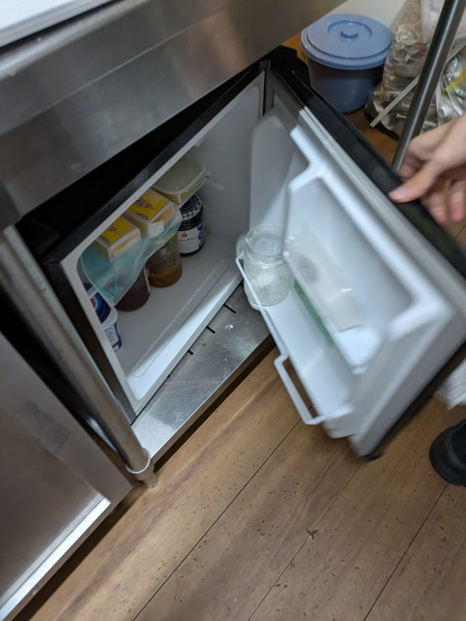
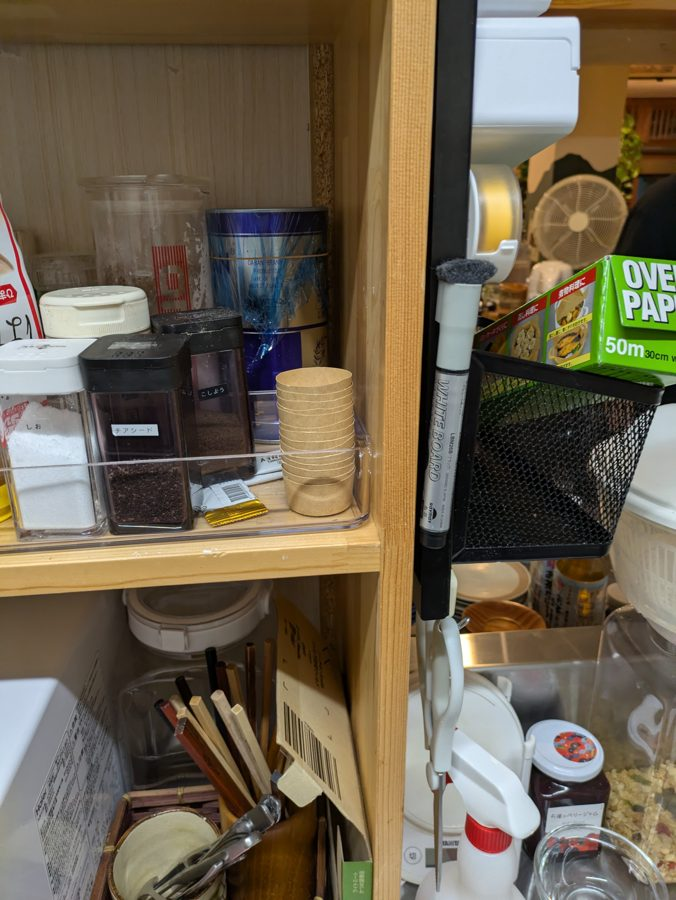
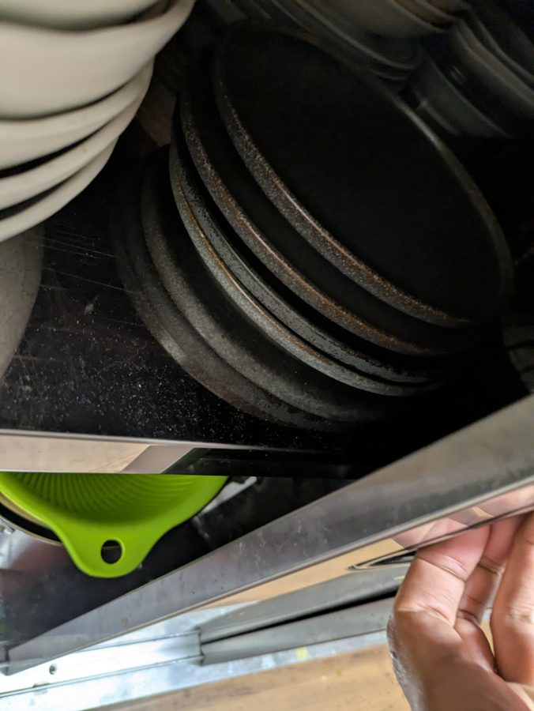
3当日のタイムテーブル
| 時刻 | やること | 備考 |
|---|---|---|
| 【 】 | 買い出し・柏屋から荷物積込 | 不足があると詰むので前夜に発注確認 |
| 【 】 | イズミヤ着・解錠・照明 | イズミヤ側への挨拶 |
| 【 】 | ビールを冷蔵庫に投入 | 冷えるまで最低2時間。最優先で入れる |
| 【 】 | 仕込み（第5・6章の各メニュー準備） | 抹茶ケーキの解凍もここで開始 |
| 【 】 | 客席セット（QRカード・カトラリー・電源） | 第4章のチェックリスト |
| 【 】 | テスト（QR決済1件・ホットプレート通電） | 開店後に気づくと詰む |
| 【 】 | 開店 | |
| 【 】 | ラストオーダー | |
| 【 】 | 閉店 | |
| 【 】 | 撤収・原状回復 | 第7章。省略しない |
| 【 】 | 日次記録を書く | 第8章。書かずに帰らない |
| 【 】 | 消灯・施錠・退店 |
▲試験営業3回ぶんの実測で各時刻を埋める。特に仕込みの所要時間
4開店前チェックリスト
チェックはその場の確認用です（保存されません。ページを再読み込みするとリセット）。
電源・設備
ドリンク
食材
客席
決済
5メニュー別 手順書（フード）
各メニューは「材料の場所 → 手順 → 注意」の順。場所の呼び名は第2章に準拠。
5-1. ニューヨークチーズケーキ
材料の場所
- ケーキ … 南東下の冷蔵庫
- ベリー … 南西下の冷蔵庫（青フタの容器）
- ホイップ … 【 】
- 粉砂糖 … 西上の棚
- 皿 … 西下（灰青の丸皿）
手順
- 西下から灰青の丸皿を出す
- 南東下の冷蔵庫からケーキを1切れ取り、紙をはがして皿の中央やや左に置く
- 茶こしで粉砂糖をケーキの上に振る
- 皿の右にホイップを1つ絞る
- ホイップの手前にベリーを載せて完成
- 粉砂糖が皿の縁につくと汚く見える。ケーキの真上だけに落とす
- ベリーは汁が広がるのでホイップに寄せて置く
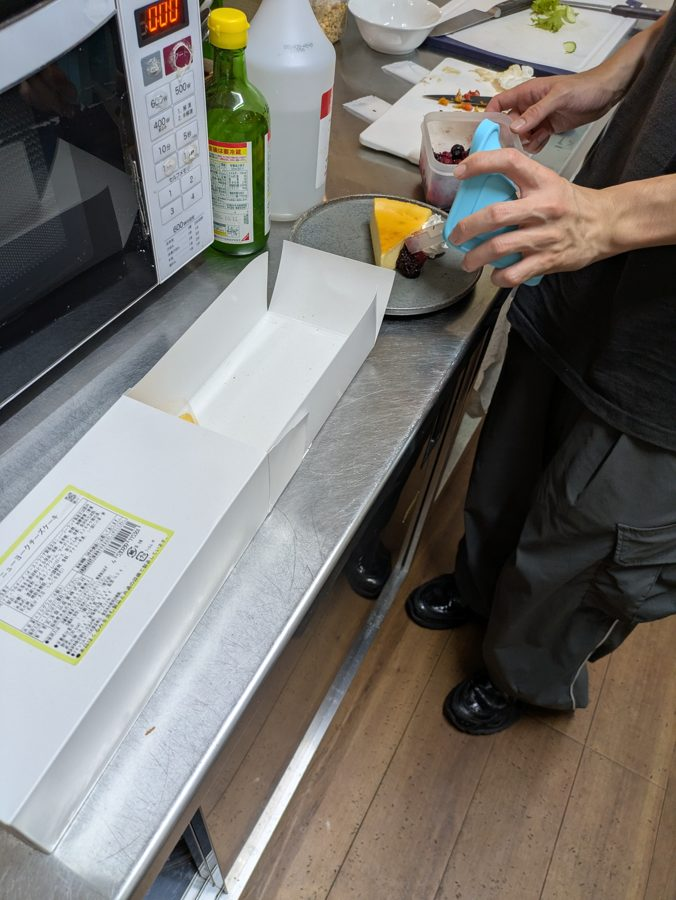
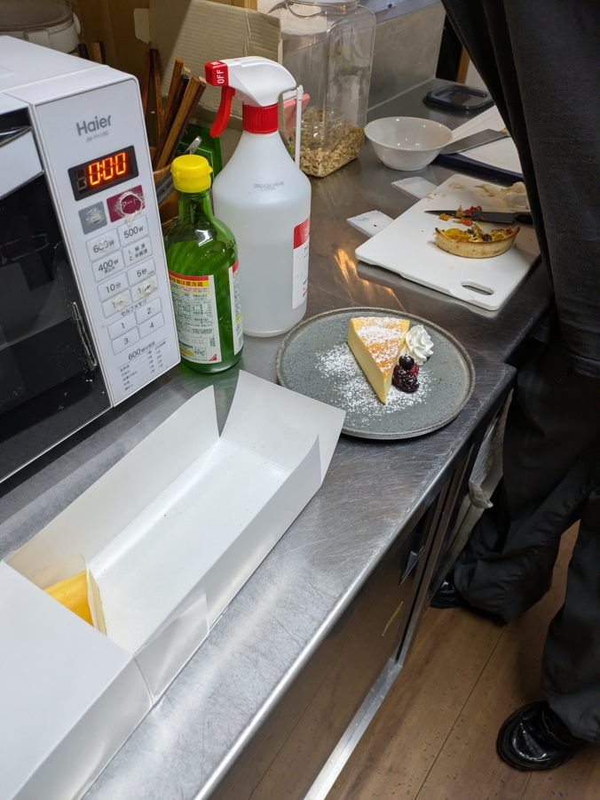
▲ホイップの入手元（缶／自分で立てる／どの冷蔵庫）を確定する
▲カットは仕込みで全カットか、注文ごとか。1本を何等分にするか
5-2. 抹茶チーズケーキ
材料の場所
- ケーキ … 南東下の冷蔵庫（冷凍品・6個入／京都宇治抹茶チーズケーキ）
- ホイップ … 南西下の冷蔵庫
- 粉砂糖 … 西上の棚
- 皿 … 西下（灰青の丸皿）
手順
- 西下から灰青の丸皿を出す
- ケーキを1切れ取り、フィルムをはがして皿の中央に置く（三角の頂点を奥に）
- 皿の右にホイップを1つ絞る
- 茶こしで粉砂糖をケーキの上と皿の余白に振って完成
- NYと違い、ベリーは載せない
- 粉砂糖は皿にも散らす方が写真映えする
- 冷凍品。解凍時間を見込まずに出そうとしない
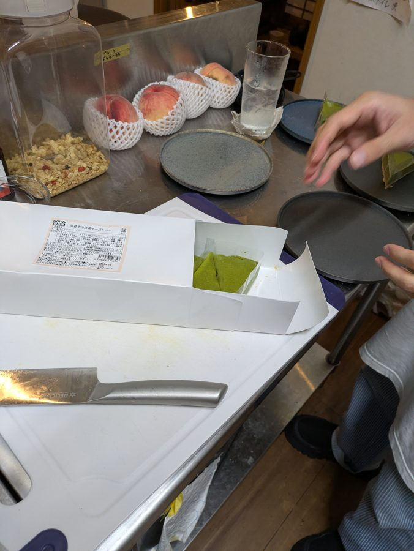
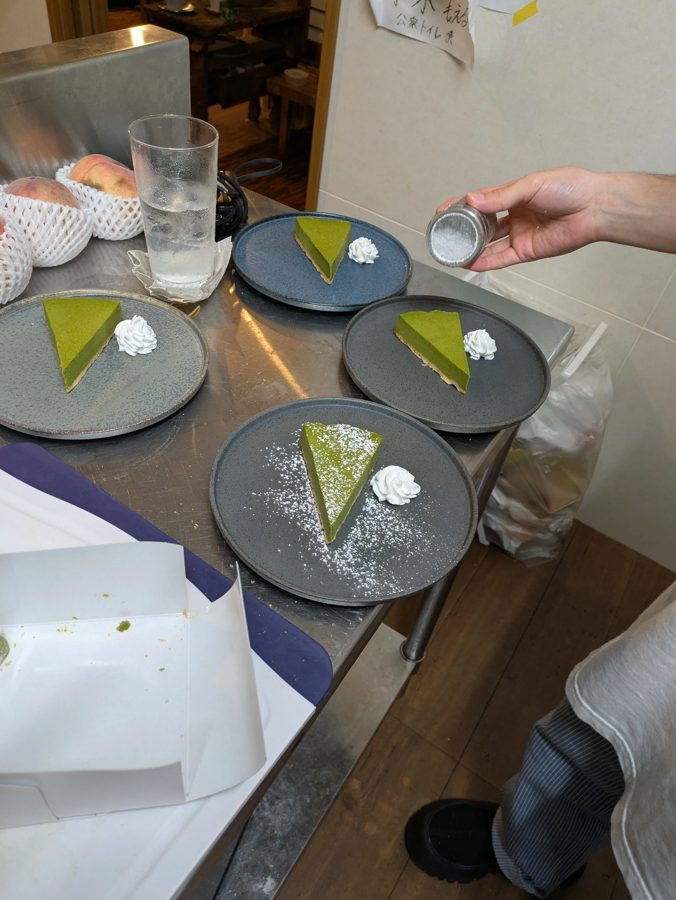
▲解凍の手順を確定する（前日から冷蔵／何時間前に出す）
5-3. 未収録のフード（追記予定）
- 蓋焼き餃子
- 味噌カマンベール
- 信州味噌チーズチキン鉄板
- たこ焼きセット
- おにぎり3種（〆）
メニューごとに「材料の場所／手順／注意」の3つと、工程写真2〜4枚を撮って追記していく。写真は完成形1枚＋つまずきやすい工程を必ず入れる。
6メニュー別 手順書（ドリンク）
計量はすべて ml。メジャーカップを使う。
6-1. アイス抹茶ラテ
道具・材料
- 厚手のゾンビグラス
- 抹茶碗（黒）・茶筅・茶こし … バーカウンターのバット上
- 抹茶・スプーン … バーカウンター
- お湯 … ポット（EVEREST）／ショットグラス1杯分
- 牛乳 … 信州高原牛乳
- ガムシロップ … ポンプボトル
手順
- ゾンビグラスに氷を詰めて冷やす。溶けた水は捨てる
- 抹茶碗に抹茶をすりきり2杯入れる
- ポットのお湯をショットグラス1杯注ぎ、茶筅を縦に動かして混ぜる
- グラスに牛乳を注ぐ。氷1個分の高さを残す
- ガムシロップを2.5プッシュ入れ、ここで混ぜる
- 茶こしでこしながら抹茶を静かに注ぐ。注いだ後は混ぜない
- ⑤で混ぜる／⑥では混ぜない。順序を逆にすると層が消える
- 緑と白の2層が完成形
- 茶こしを通さないとダマが浮いて濁る
- 牛乳を入れすぎると抹茶が乗りきらない
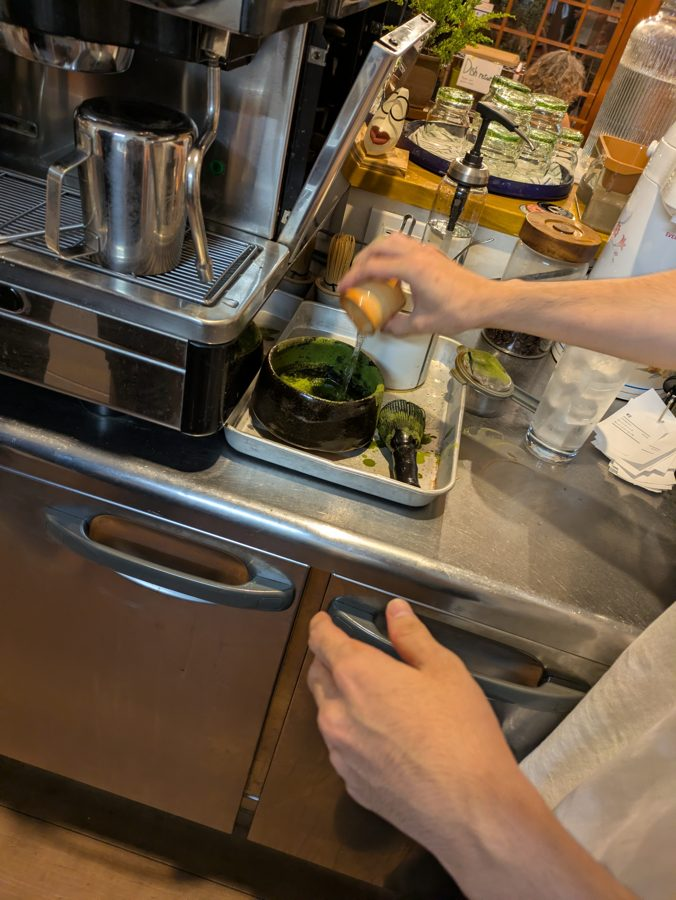
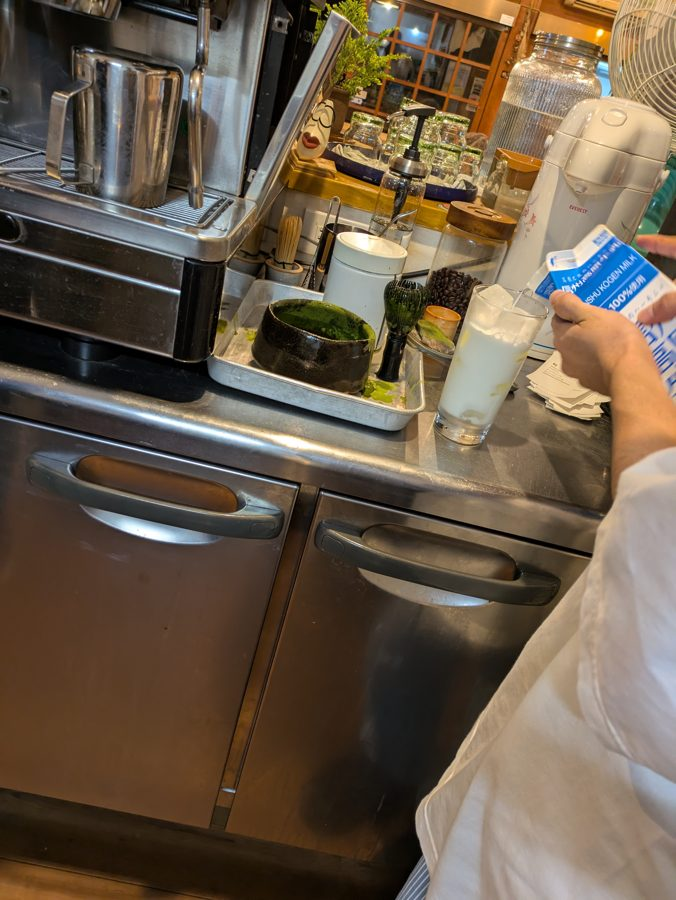
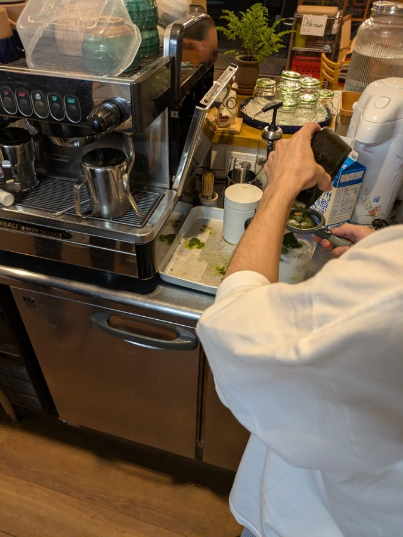
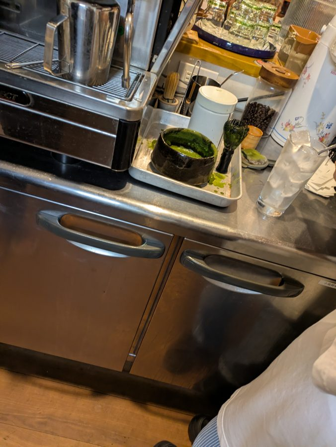
▲氷は冷やした後そのまま使うか、入れ直すか
▲ストロー／マドラーを添えるか。層のまま出すなら「混ぜてから飲んでください」の案内が要る
6-2. ジントニック
道具・材料
- クープグラス（脚つき）
- ジン（BOMBAY SAPPHIRE・青ボトル） … 中央
- トニックウォーター（缶） … 南東下の冷蔵庫
- 冷凍レモン … 南西下の冷蔵庫
- ミント … 南東下の冷蔵庫
- メジャーカップ … 中央
手順
- クープグラスに氷を満載して冷やす。溶けた水は捨てる
- ジンを 30ml 注ぐ
- トニックウォーターを満タンになるまで注ぐ
- 冷凍レモンをのせる
- ミントを手のひらで1回叩いて香りを立たせ、のせる
- ミントは叩かないとただの飾りになる。必ず1回叩く
- トニックは泡が上がるので、縁ぎりぎりで止める
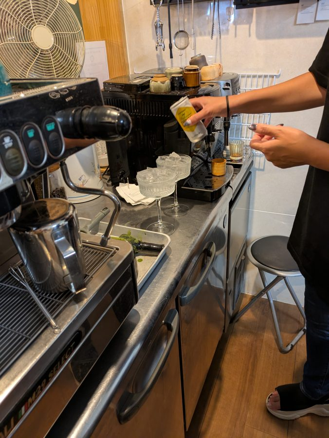
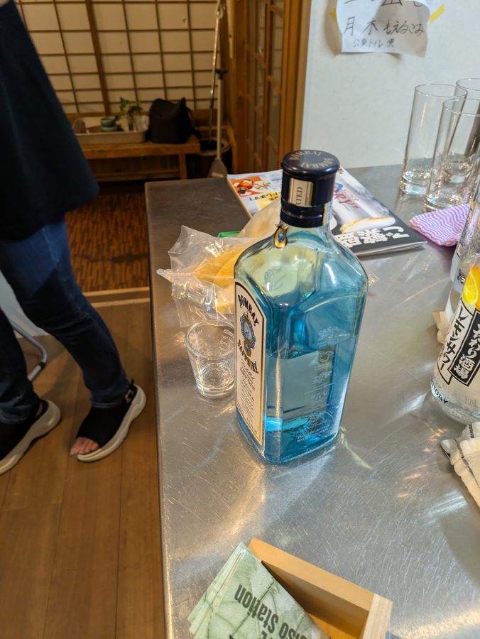
6-3. レモンサワー
道具・材料
- 厚手のゾンビグラス
- こだわり酒場のレモンサワーの素（1.8L・25度） … 中央
- 焼酎 … 北の棚
- 炭酸水（ペットボトル） … 東下の冷蔵庫
手順
- ゾンビグラスに氷を満たす
- レモンサワーの素を 45ml
- 焼酎を 10ml
- 炭酸水を注いで完成
- 素は25度の濃縮タイプ。原液のまま出さない
- 炭酸水は氷に当てず、グラスの内壁を伝わせて注ぐと炭酸が抜けにくい
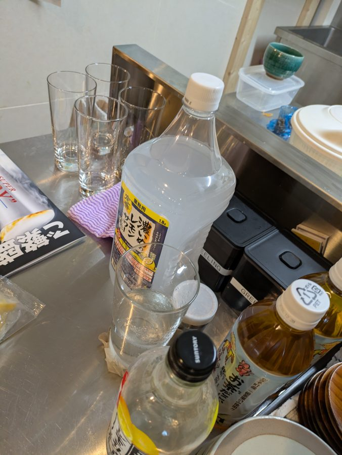
6-4. ビン飲料（ビール・ジンジャーエール等）＝セルフサービス
提供方法
- 客が冷蔵庫から自分で取る
- 栓抜きは 【 】 に常設
対応
- 希望があれば薄手グラスを出す
- 何も言われなければビンのまま提供
- セルフである以上、注文漏れ＝売上漏れ。「取る前にQRで注文」の導線を必ず案内する
- 冷蔵庫のドアに英語の掲示を貼る
- 冷えるまで最低2時間。開店2時間前の補充を厳守
▲栓抜きの定位置を決めて記入する
▲冷蔵庫ドア用の英語掲示（Order on the QR before taking a bottle）をつくる
6-5. 未収録のドリンク（追記予定）
- クラフトビールの銘柄一覧と原価・売価
- ホット系（コーヒー・抹茶ラテのホット）
- ノンアルコール（子ども連れ対応）
7閉店・撤収基準
間借りである以上、ここが関係の生命線。「翌朝イズミヤが何も気づかずに開店できる状態」が合格ライン。
撤収チェックリスト
チェックはその場の確認用です（保存されません）。
初回だけ「返した状態」の写真を撮って基準写真として貼る。以後は写真と見比べるだけで判定できる。
▲原状回復の基準写真（客席・厨房・冷蔵庫内）を撮って貼る
▲イズミヤ側と「ここまでやれば良い」の合意を取り、認識のズレをなくす
8日次記録シート
試験営業の目的はデータ取り。事業計画と融資交渉の材料になるのはこの数字だけ。毎回、閉店後に必ず書く。
| 項目 | 記入欄 |
|---|---|
| 日付・曜日 | |
| 天気 | |
| 客組数 / 客人数 | |
| 国籍の内訳 | |
| 売上合計 | |
| 客単価 | |
| ビール本数（銘柄別） | |
| フード別の出数 | |
| 平均滞在時間 | |
| 廃棄したもの | |
| 回せなかった／詰まった場面 | |
| 所感（1行） | |
| 次回変える1つ |
「回せなかった場面」が一番重要。一人運用の限界がどこで来るかが、社員を何月に雇えるかの根拠になる。
9緊急時・想定外の対応
| 状況 | 対応 |
|---|---|
| QR決済が通らない | 通信を確認 → Squareアプリで手入力決済 → それでも不可なら【 】 |
| 客が現金しか持っていない | 【 】 |
| ホットプレートで火傷 | 即座に流水で冷やす。救急箱の場所＝【 】。重い場合は救急要請 |
| アレルギーを申告された | 原材料表示を見せて客に判断してもらう。曖昧なまま提供しない |
| 酔って絡む客 | 提供を止め、水を出す。無理に説得しない。危険なら【 】へ連絡 |
| 食材切れ | QRメニューの該当項目を即座に売切表示にする |
| 飛び込みの団体 | 一人で回せる上限＝【 】名。超えたら断る |
| 停電・地震 | 火気と電源を落とし、客を屋外へ誘導。イズミヤに連絡 |
▲救急箱・消火器の場所を確認して記入する
▲一人で回せる客数の上限を、試験営業の実測で決める
10法務・遵守メモ
- 酒類提供と飲食営業の許可がどの建て付けで成立しているかを、書面で確認しておく（イズミヤの許可の範囲内か、別途届出が要るか）
- 20歳未満に酒類を提供しない。見た目で迷ったら必ず年齢確認する
- 車で来た客に酒類を提供しない。南木曽は車移動が前提の客が一定数いる
- 提供したメニューの原材料表示を保管しておく（アレルギー申告への備え）
▲許可の建て付けを確認し、根拠を書き込む。ここが未確認のまま営業を重ねない
11埋めるべき空欄の一覧
試験営業のあいだに、上から順に潰していく。
チェックはその場の確認用です（保存されません）。埋めたら本文の該当箇所も更新すること。